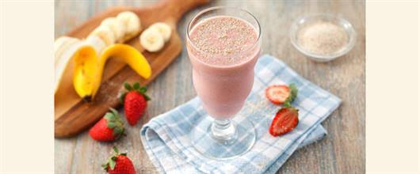
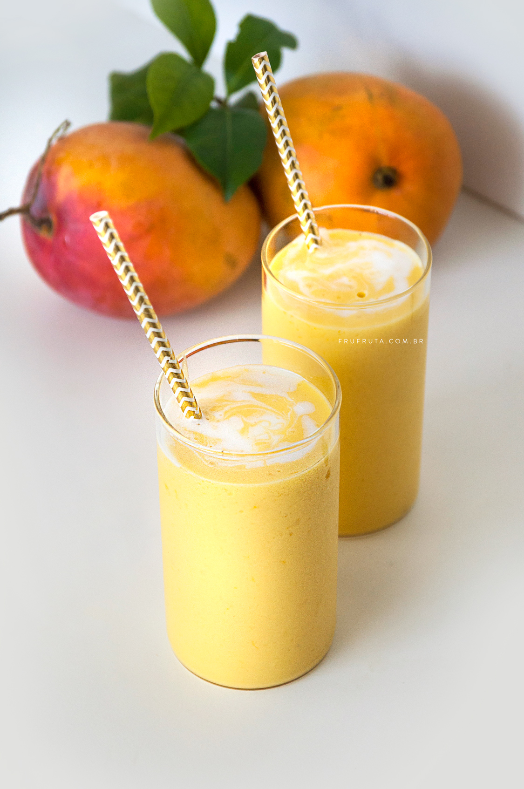
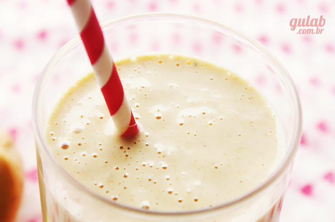

Vitamina de Morango
- 300g de morangos limpos
- 2 xícaras de chá de leite gelado
- 1 colher de sopa de aveia em flocos (ou farinha de aveia)
- 1 colher de sopa de farinha de linhaça

Vitamina de manga
- 1 unidade de MANGA MADURA
- 1/2 xícara de leite de coco caseiro
- 1/2 LIMÃO
- 1/2 colher de chá de cardamomo em pó
- 6 pedras de GELO

Vitamina de paçoca cremosa
- 1 xícara de leite
- 2 potes de iogurte grego tracional (100g cada)
- 1 pote pequeno de paçoquita cremosa (180g)

Vitamina de Banana e Pêra
- 1 banana
- 1 pêra descascada, sem caroço e picada
- 240ml de leite desnatado
- Adoçante se necessário